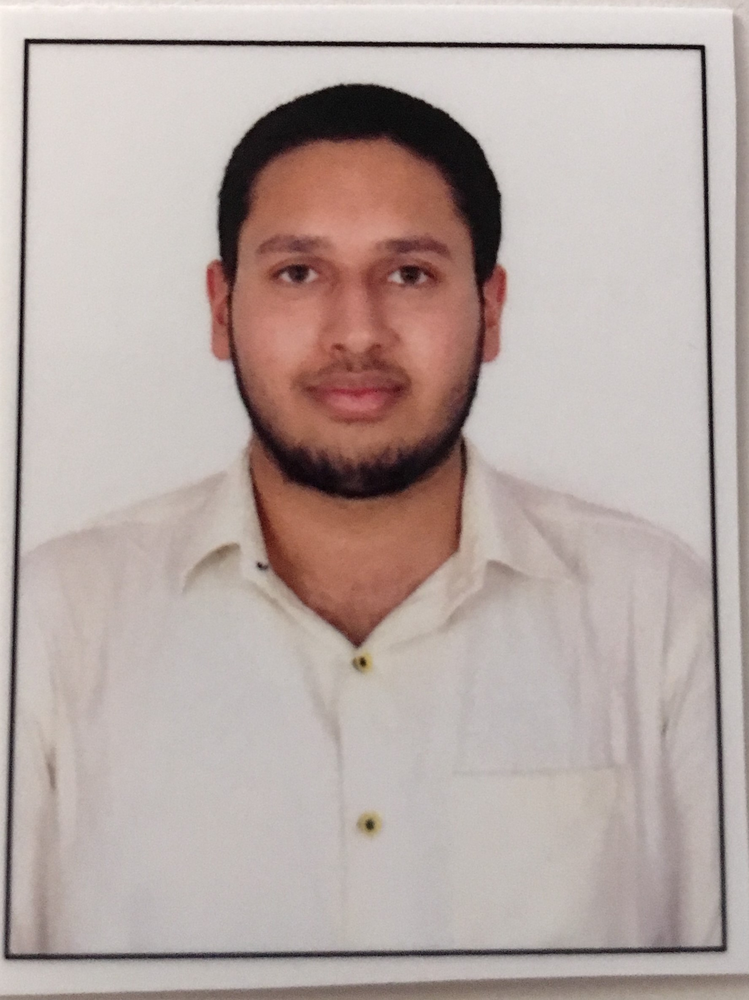

+(91) 73380 98361
| Qualification / Name of Program | Board / Institution / University | Principal Subjects / Specialization | % Marks / CGPA | Year of Passing |
|---|---|---|---|---|
| B.Tech | Presidency University, Karnataka | Computer Science Engineering | Awaited | 2021 |
| Higher Secondary | Kendriya Vidyalaya Jalahalli West, Bangalore | Physics, Chemistry, Mathematics, Computer Science | 76.2% | 2017 |
| High School | Kendriya Vidyalaya Kankinara, West Bengal | Science, Mathematics and languages | 8.8 CGPA | 2015 |
I hereby declare that all the information herewith attached are relevant to the undersigned individual.
Aryan Sharma